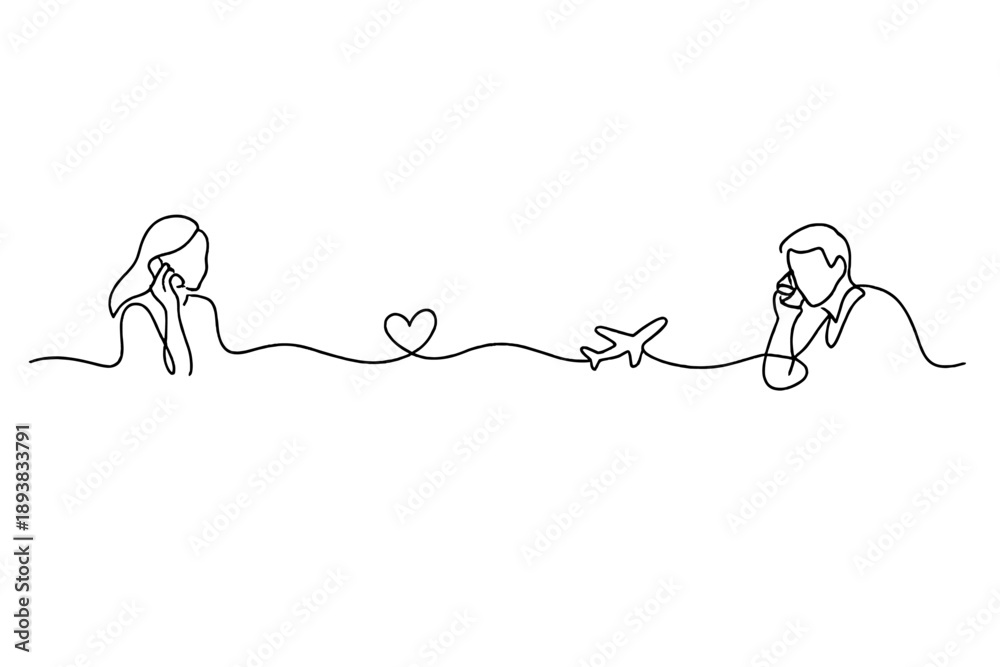

About In Between

In Between explores how communication, empathy, and understanding help people build stronger relationships. Even when people feel far apart emotionally, honest conversations can bring them closer together.

Every relationship has space between two people. Sometimes that space grows because of distance, fear, or misunderstanding. Other times it becomes a place where trust, empathy, and connection grow.
In Between explores how communication, empathy, and understanding help people build stronger relationships. Even when people feel far apart emotionally, honest conversations can bring them closer together.

Small actions often create the strongest connections. Listening carefully, asking thoughtful questions, and showing kindness help strengthen relationships over time.
Click the button above to discover a reminder about connection.
Think of one person you haven't spoken with recently. Reach out with a kind message, ask how they're doing, or simply let them know you're thinking about them.